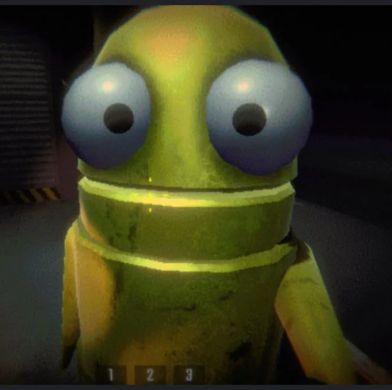

R.E.P.O. (Retrieve, Extract & Profit Operation) es un juego cooperativo de horror y supervivencia donde hasta seis jugadores trabajan en equipo para infiltrarse en entornos peligrosos, localizar objetos valiosos, transportarlos con cuidado y extraerlos mientras evitan criaturas aterradoras y gestionan el entorno físico del juego. Se lanzó en acceso anticipado en febrero de 2025 y combina elementos de humor y tensión, ofreciendo una experiencia divertida y aterradora según cómo se comporte el equipo.
El juego fue desarrollado y publicado por el estudio sueco Semiwork, utilizando el motor Unity. Originalmente comenzó como un proyecto de un solo jugador sobre limpieza de mansiones, pero evolucionó hacia un formato cooperativo con énfasis en la física y la interacción entre jugadores.
Entre sus actualizaciones más recientes se incluyen el sistema “Overcharge”, que genera consecuencias negativas si los enemigos se sostienen demasiado tiempo, un nuevo nivel llamado “Museum of Human Art”, modificadores de dificultad con fases lunares, lista de servidores, emparejamiento aleatorio y nuevas armas con nombres creativos. Desde su lanzamiento, R.E.P.O. ha recibido gran aceptación de la comunidad, con miles de reseñas positivas y picos altos de jugadores simultáneos, manteniendo la experiencia fresca y atractiva.